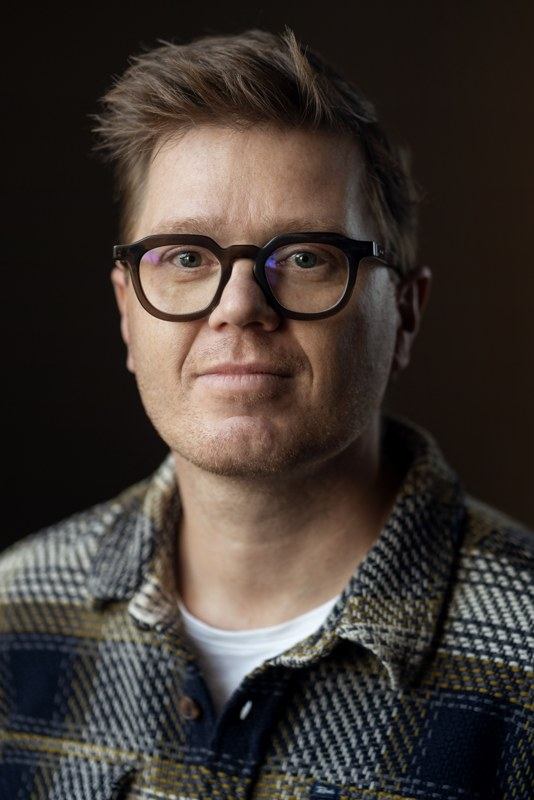
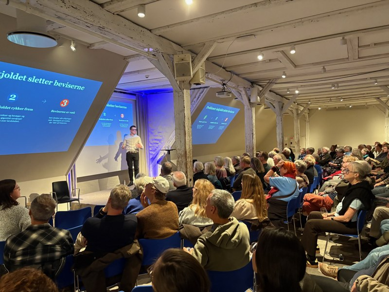
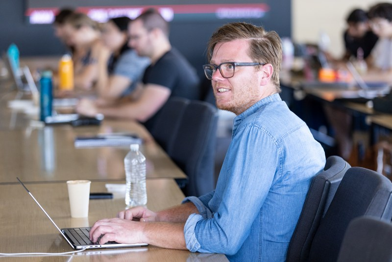

Presse og medier
Til journalister
Portrætfoto, baggrundsinformation og kontaktoplysninger til historier om gammelt DNA, fortidens natur og miljøforandringer.
Interviews og henvendelser
mwpedersen@sund.ku.dk · +45 29 27 53 42
Kontakt mig gerne om gammelt miljø-DNA, biodiversitet gennem tiden, arktiske økosystemer og samspillet mellem mennesker og deres omgivelser.
Download de enkelte billeder i fuld opløsning. Angiv venligst fotografens navn, hvor det er oplyst. Kontakt Mikkel ved spørgsmål om brug af billederne.
Presseportrætter


Foredrag og undervisning



Arktisk Festival — på scenen
Foto: Mads Lumholt
Beskåret og retoucheret.
1672 × 941 px · 2.5 MB
Download · PNG


Baggrund
Kort biografi
Mikkel Winther Pedersen er lektor på Globe Institute ved Københavns Universitet, hvor han leder Palaeo-Environmental Genomics Group. Han undersøger DNA bevaret i jord og sedimenter for at rekonstruere fortidens økosystemer og forstå, hvordan klima og menneskers aktiviteter har påvirket biodiversiteten. Hans arbejde kombinerer geografi, genetik og bioinformatik med feltarbejde i Arktis og andre dele af verden. Han har bidraget til opdagelsen af et to millioner år gammelt økosystem i Grønland ved hjælp af miljø-DNA.
CV opdateret november 2026 · på engelsk
Forskning til et bredere publikum
Udvalgt formidling
Eksempler på dokumentarfilm, foredrag, artikler og samtaler om min forskning.
Dokumentarfilm · 2024
Hunt for the Oldest DNA
Jeg medvirker i Niobe Thompsons dokumentarfilm om opdagelsen af gammelt DNA og et to millioner år gammelt økosystem i Grønland.
Offentligt foredrag · 2026
Verdens ældste DNA: Et vindue til Grønlands fortid
På Arktisk Festival fortalte jeg om DNA fra Kap København, og hvad det afslører om Grønlands fortidige plante- og dyreliv og klima.
Populærvidenskabelig artikel · 2026
Gammelt DNA i Donaus sedimenter
Giulia Zampirolo og jeg skrev en populærvidenskabelig artikel til Videnskab.dk om gammelt DNA, fortidens menneskelige aktiviteter og miljøforandringer langs Donau.
Spørgerunde · 2024
Spørgerunde med PBS NOVA
En åben spørgerunde på Reddit med PBS NOVA om opdagelsen af verdens ældste DNA i forbindelse med Hunt for the Oldest DNA.
Radio · 2026
NPR / Short Wave
Jeg bidrog med ekspertkommentarer om gamle egernekskrementer som arkiver for istidens DNA i NPR’s videnskabsnyheder den 11. juni 2026.
Radio · 2023
Radio4: Missionen
Jeg medvirkede i programmet “Vi sikrer artens overlevelse” den 29. marts 2023 om arters overlevelse og biodiversitet sammen med andre inviterede gæster.
Tv · 2018
Jagten på den sidste dinosaur
Jeg deltog som DNA-forsker i denne dokumentarserie på DR2, der følger en ekspedition til Republikken Congo sammen med Christoffer Knuth.
Offentligt foredrag · 2018
Vin & Videnskab: Historier fra Københavns undergrund
Ved Statens Naturhistoriske Museums arrangement den 7. november 2018 fortalte jeg om City Core-projektet, og hvordan borekerner fra Botanisk Have belyser Københavns historie.
Festivalforedrag · 2021–2022
Kultursalonerne Gisselfeld
Offentlige foredrag om historier bevaret i DNA fra mudder, og hvordan DNA-forskning kan belyse Gisselfelds historie, på en festival med musik, litteratur og idéer.